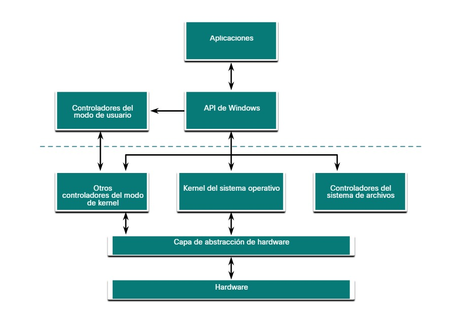
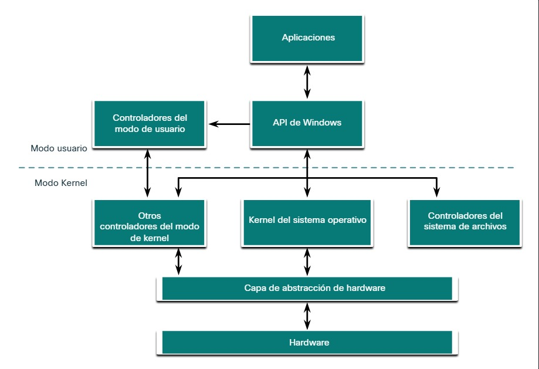
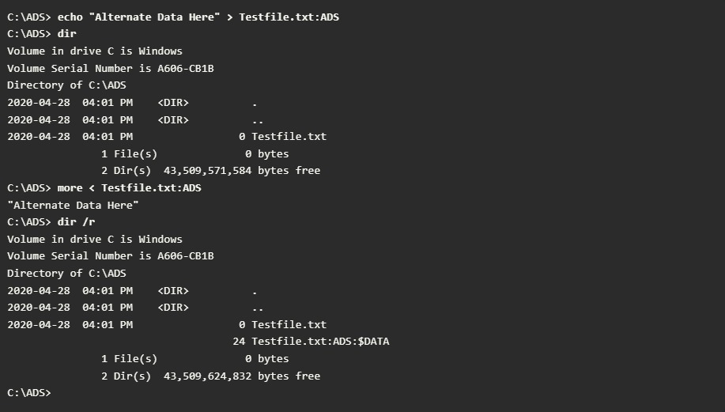
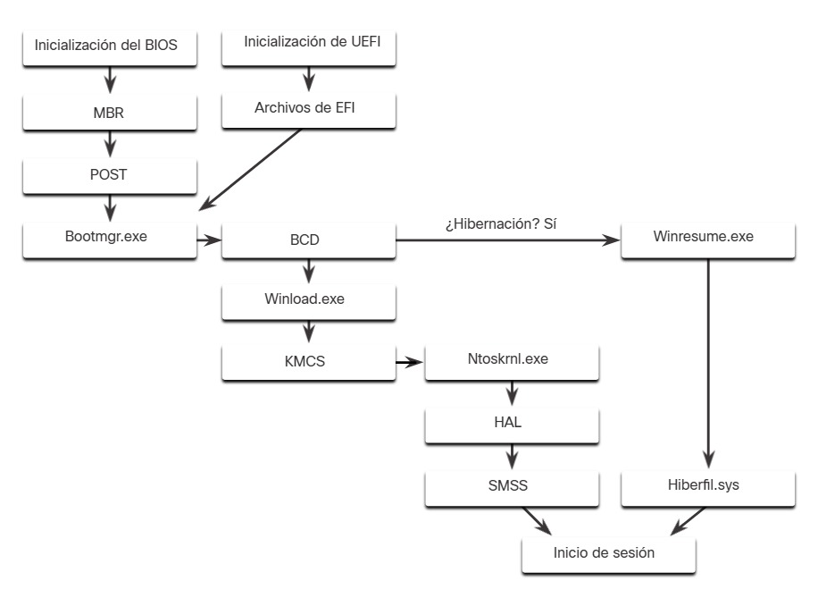
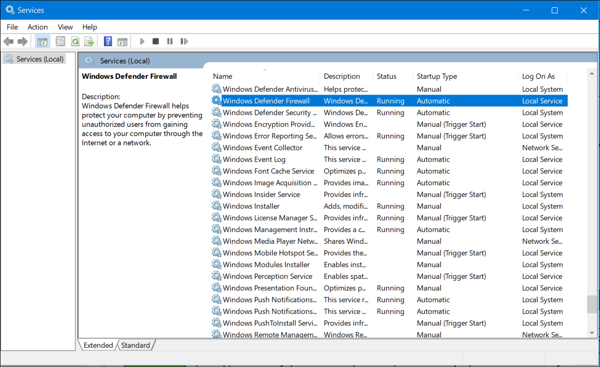

3.2.1 Capa de abstracción de hardware
Las computadoras con Windows utilizan muchos tipos de hardware distintos. El sistema operativo se puede instalar en una computadora comprada o en una computadora ensamblada por el usuario. Cuando se instala el sistema operativo, debe aislarse de las diferencias en el hardware. En la figura, se ve la arquitectura básica de Windows.

Una capa de abstracción de hardware (HAL) es un software que maneja toda la comunicación entre el hardware y el kernel. El kernel es el núcleo del sistema operativo y controla toda la computadora. Se encarga de todas las solicitudes de entrada y salida, la memoria y todos los periféricos conectados a la computadora.
En algunos casos, el núcleo todavía se comunica con el hardware directamente, por lo que no es totalmente independiente de la HAL. La HAL también necesita el núcleo para realizar algunas funciones.
3.2.2 Modo usuario y modo Kernel
Como se identifica en la figura, hay dos modos diferentes en los que funciona una CPU cuando la computadora tiene Windows instalado: el modo de usuario y el modo de núcleo.

Las aplicaciones instaladas se ejecutan en el modo de usuario, y el código del sistema operativo lo hace en el modo de kernel. El código que se ejecuta en el modo de núcleo tiene acceso ilimitado al hardware subyacente y es capaz de ejecutar cualquier instrucción de la CPU. El código del modo de núcleo también puede hacer referencia a cualquier dirección de la memoria directamente. Dado que suele estar reservado para las funciones más confiables del sistema operativo, un error en el código que se ejecuta en el modo de núcleo detiene el funcionamiento de toda la computadora. Por el contrario, otros programas (como las aplicaciones de usuario) se ejecutan en modo de usuario y no tienen acceso directo a ubicaciones de memoria o hardware. El código de modo de usuario debe pasar por el sistema operativo para tener acceso a los recursos de hardware. Debido al aislamiento que brinda el modo de usuario, los errores en dicho modo afectan solamente a la aplicación y es posible una recuperación. La mayoría de los programas de Windows funcionan en el modo de usuario. Los controladores de dispositivos (elementos del software que permiten que el sistema operativo y un dispositivo se comuniquen) pueden funcionar en modo de núcleo o de usuario, según el controlador.
Todo el código que se ejecuta en el modo de núcleo usa el mismo espacio para la dirección postal. Los controladores en modo de núcleo no están aislados del sistema operativo. Si se produce un error con el controlador en el modo de núcleo y escribe en el espacio para la dirección postal incorrecto, el sistema operativo u otro controlador del modo de núcleo podrían verse afectados negativamente. En este sentido, el controlador podría dejar de funcionar e interrumpir el funcionamiento de todo el sistema operativo.
Cuando se ejecuta código en el modo de usuario, el núcleo le otorga su propio espacio para la dirección postal limitado, junto con un proceso creado específicamente para la aplicación. Esto se hace, principalmente, para evitar que las aplicaciones cambien código del sistema operativo que se esté ejecutando al mismo tiempo. Al tener su propio proceso, la aplicación tiene su propio espacio para la dirección postal privado, lo que impide que otras aplicaciones modifiquen sus datos. Esto también ayuda a evitar que el sistema operativo y otras aplicaciones dejen de funcionar si se interrumpe la aplicación.
3.2.3 Sistemas de archivos de Windows
Un sistema de archivos determina cómo se organiza la información en los medios de almacenamiento. Algunos sistemas de archivos pueden ser una mejor opción que otros, según el tipo de medios que se utilice. La tabla enumera los sistemas de archivos que admite Windows.
| Sistema de archivos de Windows | Descripción |
|---|---|
| exFAT |
|
| Sistema de archivos jerárquico + (HFS+) |
|
| Sistema de archivos extendido (EXT) |
|
| Sistema de archivos de nueva tecnología (NTFS) |
|
NTFS es el sistema de archivos más utilizado en Windows por numerosas razones. NTFS admite archivos y particiones muy grandes y es muy compatible con otros sistemas operativos. Además, NTFS también es muy confiable y admite funciones de recuperación. Lo más importante es que admite muchas características de seguridad. El control de acceso de datos se logra mediante descriptores de seguridad. Estos descriptores de seguridad contienen información de propiedad y permisos en todos los niveles hasta el nivel de archivo. NTFS también controla muchas marcas de hora para registrar la actividad del archivo. También llamadas MACE, las marcas de hora de modificación, acceso, creación y modificación de entrada suelen usarse en las investigaciones forenses para determinar el historial de un archivo o carpeta. NTFS también admite la encriptación del sistema de archivos para proteger todos los medios de almacenamiento.
Antes de poder usar un dispositivo de almacenamiento, como un disco, se debe formatear con un sistema de archivos. A su vez, antes de poder implementar un sistema de archivos en un dispositivo de almacenamiento, se debe particionar dicho dispositivo. Los discos duros se dividen en áreas llamadas particiones. Cada partición es una unidad lógica de almacenamiento que se puede formatear para almacenar información, como archivos de datos o aplicaciones. Durante el proceso de instalación, la mayoría de los sistemas operativos particionan y formatean automáticamente el espacio disponible de la unidad con un sistema de archivos, como NTFS.
El formato NTFS crea estructuras importantes en el disco para almacenar archivos y tablas para registrar las ubicaciones de los archivos:
Nota - Cuando se formatea una partición, los datos previos posiblemente puedan ser recuperados por que no todos los datos son completamente eliminados. Este espacio libre puede ser examinado y se pueden recuperar archivos que pueden comprometer la seguridad. Si se va a reutilizar una unidad, se recomienda realizar un borrado seguro. El borrado seguro escribirá datos en toda la unidad varias veces para garantizar que no queden datos anteriores.
3.2.4 Flujos de datos alternativos
NTFS guarda los archivos como una serie de atributos; por ejemplo, el nombre del archivo o una marca de hora. Los datos que contiene el archivo se almacenan en el atributo $DATA, y se conocen como flujo de datos. Con NTFS, es posible conectar flujos de datos alternativos (Alternate Data Streams, ADS) al archivo. En ocasiones, las aplicaciones aprovechan esta función para almacenar información adicional sobre el archivo. Los ADS son un factor importante en relación con el malware. Esto se debe a que resulta sencillo ocultar datos en ADS. Un atacante podría almacenar código malicioso dentro de ADS y otro archivo podría invocar este contenido posteriormente.
En el sistema de archivos NTFS, un archivo con ADS se identifica después del nombre del archivo y dos puntos, por ejemplo Testfile.txt:ADS. Este nombre de archivo indica que un ADS llamado ADS está asociado con el archivo llamado Testfile.txt. Un ejemplo de ADS es mostrada en la salida de un comando.

En la salida:
3.2.5 Proceso de arranque de Windows
Ocurren muchas acciones entre el tiempo que es presionado el botón de poder y Windows siendo cargado completamente, como es mostrado en la figura. Esto se conoce como proceso de arranque de Windows.

Existen dos tipos de firmware de computadora:
En BIOS firmware, el proceso comienza con la fase de inicialización del BIOS. Esto ocurre cuando se inicializan los dispositivos de hardware y se realiza una prueba automática de encendido (POST, Power-On Self Test) para garantizar que todos estos dispositivos se estén comunicando. La POST finaliza cuando se detecta el disco del sistema. La última instrucción en la POST es buscar el registro principal de arranque (MBR, Master Boot Record).
El MBR contiene un pequeño programa que se encarga de localizar y cargar el sistema operativo. La BIOS ejecuta este código y el sistema operativo comienza a cargarse.
A diferencia de BIOS firmware, UEFI firmware tiene mucha visibilidad en el proceso de arranque. El arranque con UEFI se realiza cargando los archivos de programa de EFI, almacenados como archivos .efi en una partición especial del disco conocida como la partición de sistema EFI (ESP, EFI System Partition).
Nota: Una computadora que utiliza UEFI almacena el código de arranque en el firmware. Esto ayuda a aumentar la seguridad de la computadora al momento del arranque, ya que entra directamente en el modo protegido.
Si el firmware es BIOS o UEFI, después de ubicar una instalación válida de Windows, se ejecuta el archivo Bootmgr.exe. Bootmgr.exe cambia el sistema del modo real al modo protegido para que se pueda utilizar toda la memoria del sistema.
Bootmgr.exe lee la base de datos de configuración de arranque (BCD). La BCD contiene cualquier código adicional necesario para iniciar la computadora, junto con una indicación que señala si la computadora está saliendo de una hibernación o si es un arranque en frío. Si la computadora está saliendo de una hibernación, el proceso de arranque continúa con Winresume.exe. Esto permite que la computadora lea el archivo Hiberfil.sys que contiene el estado de la computadora cuando ingresó en la hibernación.
Si se inicia la computadora con un arranque en frío, se carga el archivo Winload.exe. El archivo Winload.exe crea un registro de la configuración de hardware en el registro. El registro es una lista de todos los ajustes, las opciones, el hardware y el software de la computadora. El registro se explorará en profundidad más adelante en este capítulo. Winload.exe también utiliza la firma de código en modo kernel (KMCS) para asegurarse de que todos los controladores estén firmados digitalmente. Esto garantiza que los controladores son seguros para cargarlos al iniciar la computadora.
Después de que se analizan los controladores, Winload.exe ejecuta Ntoskrnl.exe, que arranca el núcleo de Windows y configura la HAL. Finalmente, Session Manager Subsystem (SMSS) lee el registro para crear el entorno de usuario, iniciar el servicio de Winlogon y preparar el escritorio de cada usuario a medida que inician sesión.
3.2.6 Inicio de Windows
Hay dos elementos importantes del registro que se utilizan para iniciar automáticamente aplicaciones y servicios:
El registro se discutirá más adelante en este tema.
La presencia de entradas diferentes en estas ubicaciones del registro definen qué servicios y aplicaciones se iniciarán, según lo que indiquen sus tipos de entrada. Estos tipos son Run, RunOnce, RunServices, RunServicesOnce y Userinit. Estas entradas se pueden ingresar manualmente en el registro, pero es mucho más seguro usar la herramienta Msconfig.exe. Esta herramienta se utiliza para ver y cambiar todas las opciones de inicio de la computadora. Use el cuadro de búsqueda para encontrar y abrir la herramienta Msconfig.
La herramienta Msconfig abre la ventana Configuración del sistema. Hay cinco ventanas que contienen las opciones de configuración.
| General |
|---|
| Aquí se pueden elegir tres tipos de inicio diferentes. “Normal” carga todos los controladores y servicios. “Con diagnóstico” carga solamente los servicios y controladores básicos. “Selectivo” le permite al usuario elegir qué cargar en el inicio. |
 |
| Arranque |
|---|
| Aquí se puede elegir cualquier sistema operativo instalado para comenzar. También hay opciones para el arranque a prueba de errores, que se utiliza para solucionar problemas de inicio. |
 |
| Servicios |
|---|
| TTodos los servicios instalados se enumeran aquí para que se puedan elegir para comenzar al inicio. |
 |
| Inicio |
|---|
| Todas las aplicaciones y servicios que están configurados para comenzar automáticamente al inicio se pueden habilitar o deshabilitar abriendo el administrador de tareas desde esta pestaña. |
 |
| Herramientas |
|---|
| Muchas herramientas comunes del sistema operativo se pueden iniciar directamente desde esta pestaña. |
 |
3.2.7 Apagado de Windows
Siempre es mejor cerrar correctamente la computadora que apagarla. Los archivos que quedan abiertos, los servicios que se cierran de manera desordenada y las aplicaciones que se bloquean pueden sufrir daños si se apaga la computadora sin informar primero al sistema operativo. La computadora necesita tiempo para cerrar cada aplicación, apagar cada servicio y registrar cualquier cambio de configuración antes de interrumpir la alimentación.
Durante el apagado, la computadora cierra primero las aplicaciones del modo de usuario y, luego, los procesos de modo de núcleo. Si un proceso del modo de usuario no responde durante una cierta cantidad de tiempo, el sistema operativo muestra una notificación y permite que el usuario espere a que la aplicación responda o fuerce la finalización del proceso. Si un proceso en el modo de núcleo no responde, parecerá que el apagado se detuvo y es posible que sea necesario apagar la computadora con el botón de encendido.
Hay varias maneras de apagar una computadora Windows: La opción de apagado del menú de Windows, el comando shutdown en la linea de comandos, utilizar Ctrl+Alt+Delete y presionando el icono de botón de poder. Hay tres opciones diferentes entre las que elegir al apagar el equipo:
3.2.8 Procesos, subprocesos y servicios
Una aplicación de Windows se compone de procesos. La aplicación puede tener uno o varios procesos exclusivos. Un proceso es cualquier programa que se esté ejecutando. Cada proceso en ejecución está compuesto de, al menos, un subproceso. Un subproceso es una parte del proceso que puede ejecutarse. El procesador realiza los cálculos en el subproceso. Para configurar los procesos de Windows, busque el Administrador de tareas. La pestaña Procesos del Administrador de tareas se muestra en la figura.

Todos los subprocesos exclusivos de un proceso están incluidos en el mismo espacio para la dirección postal. Esto significa que estos subprocesos no pueden tener acceso al espacio para la dirección postal de ningún otro proceso. Esto evita el daño de otros procesos. Debido a que Windows realiza múltiples tareas simultáneamente, es posible ejecutar varios subprocesos al mismo tiempo. La cantidad de subprocesos que se pueden ejecutar al mismo tiempo depende del número de procesadores de la computadora.
Algunos de los procesos que ejecuta Windows son servicios. Son programas que se ejecutan en segundo plano para respaldar el funcionamiento del sistema operativo y de las aplicaciones. Pueden configurarse para iniciarse automáticamente cuando Windows arranca o es posible iniciarlos manualmente. También pueden detenerse, reiniciarse o deshabilitarse.
Los servicios proporcionan funcionalidades de duración prolongada, como la conexión inalámbrica o el acceso a un servidor FTP. Para configurar los servicios de Windows, busque “servicios”. El subprograma del panel de control de Servicios de Windows se muestra en la figura.

Ser muy cuidadoso manipulando las configuraciones de estos servicios Algunos programas dependen de uno o más servicios para funcionar correctamente. Apagar un servicio puede afectar adversamente aplicaciones u otros servicios.
3.2.9 Asignación de la memoria e identificadores
Una computadora funciona almacenando las instrucciones en la memoria RAM hasta que la CPU las procesa. El espacio para la dirección postal virtual de un proceso es el conjunto de direcciones virtuales que puede utilizar el proceso. La dirección virtual no es la ubicación física real en la memoria, sino una entrada en una tabla de página que se utiliza para traducir la dirección virtual a una dirección física.
Cada proceso en una computadora con Windows de 32 bits admite un espacio para la dirección postal virtual que hace posible manipular hasta 4 GB. Cada proceso en una computadora con Windows de 64 bits admite un espacio para la dirección postal virtual de 8 TB.
Cada proceso de espacio del usuario se ejecuta en un espacio para la dirección postal privado, separado de otros procesos de espacio del usuario. Cuando el proceso de espacio del usuario necesita tener acceso a los recursos del núcleo, debe utilizar un identificador de procesos. Esto se debe a que el proceso de espacio del usuario no puede tener acceso directo a estos recursos del núcleo. El identificador de procesos brinda el acceso que necesita el proceso de espacio del usuario sin conectarse directamente.
Una poderosa herramienta para ver la asignación de memoria es RamMap, que se muestra en la figura. RAMMap forma parte del conjunto de herramientas de Windows Sysinternals. Se puede descargar desde Microsoft. RAMMap proporciona una gran cantidad de información acerca de cómo Windows ha asignado la memoria del sistema al kernel, los procesos, los controladores y las aplicaciones.

3.2.10 El registro de Windows
Windows almacena toda la información sobre el hardware, las aplicaciones, los usuarios y la configuración del sistema en una extensa base de datos conocida como el Registro. Las maneras en que interactúan estos objetos también se registran, por ejemplo, qué archivos abre una aplicación y todos los detalles de propiedad de carpetas y aplicaciones. El registro es una base de datos jerárquica donde el nivel más alto se conoce como subárbol, debajo están las claves y, luego, las subclaves. Los valores almacenan datos y se almacenan en las claves y subclaves. Una clave de registro puede tener hasta 512 niveles de profundidad.
La tabla enumera las cinco colmenas del registro de Windows.
| Colmena de registro | Descripción |
|---|---|
| HKEY_CURRENT_USER (HKCU) | Contiene información sobre el usuario actualmente conectado |
| HKEY_USER (HKU) | Contiene información sobre todas las cuentas de usuario en el host |
| HKEY_CLASSES_ROOT (HKCR) | |
| HKEY_LOCAL_MACHINE (HKML) | Contiene información sobre los registros de vinculación e incrustación de objetos (OLE). OLE permite a los usuarios incrustar objetos de otras aplicaciones (como una hoja de cálculo) en un solo documento (como un documento de Word). |
| HKEY_CURRENT_CONFIG | Contiene información sobre el perfil de hardware actual |
No es posible crear nuevos subárboles. Las claves y los valores de registro en los subárboles pueden crearse, modificarse o eliminarse usando una cuenta con privilegios de administrador. Como es mostrado en la figura, la herramienta regedit.exe es usada para modificar el registro. Se debe tener mucho cuidado al usar esta herramienta. Cambios mínimos en el registro podrían tener consecuencias sustanciales o hasta catastróficas.

La navegación por el registro es muy similar a la del explorador de archivos de Windows. Use el panel izquierdo para navegar por las colmenas y la estructura debajo de él y use el panel derecho para ver el contenido del elemento resaltado en el panel izquierdo. Con tantas claves y subclaves, la ruta de la clave puede resultar muy prolongada. La ruta aparece en la parte inferior de la ventana como referencia. Dado que cada clave y subclave es, en definitiva, un contenedor, la ruta se representa como una carpeta en un sistema de archivos. El backslash () es utilizado para diferenciar la jerarquía de la base de datos.
Las claves de registro pueden contener una subclave o un valor. Los diferentes valores que pueden contener las claves son los siguientes:
Debido a que el registro mantiene casi toda la información del usuario y del sistema operativo, es fundamental asegurarse de no ponerlo en riesgo. Las aplicaciones potencialmente maliciosas pueden agregar claves de registro para que se inicien cuando se inicia la computadora. Durante un arranque normal, el usuario no verá el programa iniciarse porque la entrada está en el registro y la aplicación no muestra ninguna ventana ni indicio de inicio durante el arranque de la computadora. Un registro de clave, por ejemplo, sería devastador para la seguridad de una computadora si iniciara el arranque sin el conocimiento ni consentimiento del usuario. Cuando se realizan auditorías normales de seguridad o se corrige un sistema infectado, se deben revisar las ubicaciones de inicio de la aplicación en el registro para asegurarse de que cada elemento sea conocido y seguro de ejecutar.
El registro también contiene la actividad que realiza un usuario durante el uso diario habitual de la computadora. Esto abarca el historial de los dispositivos de hardware, incluidos todos los dispositivos que se han conectado a la computadora con el nombre, el fabricante y el número de serie. En el registro, también se almacena otra información, como los documentos que un usuario y un programa abrieron, dónde se encuentran y cuando se tuvo acceso a ellos. Esto resulta muy útil durante la ejecución de una investigación forense.
3.2.11 Práctica de laboratorio - Explorar procesos, subprocesos, controles y el registro de Windows
En esta práctica de laboratorio, explorarán los procesos, subprocesos y identificadores usando el Explorador de procesos de SysInternals. También utilizarán el Registro de Windows para cambiar un ajuste.